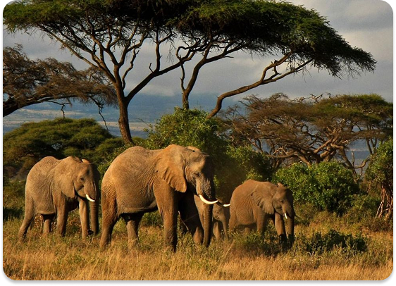
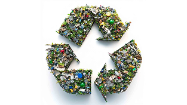
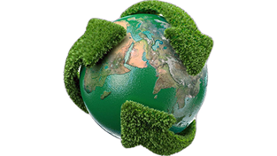

Platform edukasi lingkungan dan dirancang sebagai sarana pembelajaran terpadu untuk meningkatkan wawasan, kepedulian, dan tanggung jawab terhadap kelestarian lingkungan di Indonesia.
Mulai Belajar
Website ini merupakan media informasi dan edukasi yang memuat pembahasan mengenai biota beserta klasifikasinya, jenis-jenis sampah dan tata cara pemilahannya, serta pengelolaan dan pemeliharaan sampah dan tanaman secara tepat. Penyajian materi dilakukan secara sistematis guna meningkatkan pemahaman dan kesadaran masyarakat terhadap pentingnya pelestarian lingkungan dan penerapan prinsip keberlanjutan.
Spesies vegetasi yang telah tercatat di Indonesia
Spesies Wildlife yang telah tercatat di Indonesia kurang lebih
Klik salah satu card untuk melihat ringkasan singkat.
Biota menampilkan informasi dari berbagai jenis dan spesies makhluk hidup beserta ciri-ciri khasnya, sehingga membantu dalam memahami keanekaragaman hayati secara lebih mendalam.
Lihat Detail
Mencakup informasi mengenai jenis-jenis sampah, cara pemilahannya yang tepat, serta alternatif pengelolaan yang lebih ramah lingkungan sebagai upaya mengurangi dampak negatif terhadap ekosistem.
Lihat Detail
Memberikan informasi mengenai langkah-langkah pemeliharaan sampah dan pemeliharaan biota secara berkelanjutan.
Lihat Detail